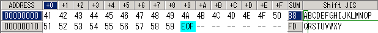
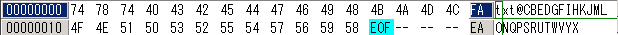
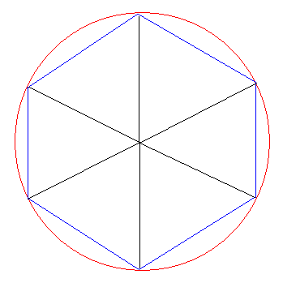

毒と笑いととつげき東北
〜〜過去の雑記〜〜 （日記ペース無理なんで雑記に名称変更）
11）02/07/08〜02/09/29分
10）02/01/07〜02/07/08分
９）01/08/30〜01/10/30分
８）01/06/20〜01/08/25分
７）01/05/09〜01/06/12分
６）01/03/02〜01/05/03分
５）01/02/06〜01/03/01分
４）00/12/30〜01/02/05分
３）00/12/22〜00/12/29分
２）00/12/14〜00/12/21分
１）00/11/24〜00/12/13分
03/01/02
暗号ネタ2
ネット上でいろいろな暗号化ツールを見てまわっている。
本格的なものからお遊び系のものまで色々あって楽しいが、アルゴリズム（またはアルゴリズム名）さえ明記せずにシェアウェアにするのはどうかと思う。
そこまで暗号に関する常識（知識）のない人が作った暗号ソフトだと、たぶん非常に弱い暗号なんじゃなかろーか・・・。
一番笑ったのは「0から254までの数字を入力して、ボタンを押して下さい。暗号化されます」というやつだった。
おえ鍵たった255通りだけか！ こども銀行か( ≧∇≦)ﾌﾞﾊﾊﾊ!
ついでになぜ256通りでなく255通りなのかもすごくすごく謎だ・・・ん！？
普通に作れば、8ビット分の鍵を扱えるわけだから、256通りの鍵が使えなければならないはずだ。
しかし255通りしか使えないということは、256種類のうちの1種類は、暗号化にふさわしくないのだ！
例えば「入力した鍵の値と、文字のデータの値を足して、256で割った余り」が暗号文になるとかじゃないか！？
1文字は256ビットで表されているからそういうシステムになっているのかと考えられる。
つまり、「ABC」→「BCD」（+1の場合）みたいな単純な暗号ではなかろうか・・・？
それで、256足して256で割ってしまうと、元に戻ってしまうために、256が使えなくなっているんじゃないか？
さっそく実験してみよう。
これが元ファイル。

これを「鍵 1」で暗号化してみる。
どれどれ・・・・

ほぼそのとおりかよ！！
でも小ざかしく２文字に1文字だけが変化しとるよ！！
地味に予想が外れて割とくやしいよ！！
なお、ヤフーの暗号化ツールからの数少ないリンクから行けた。
ヤフーさん、ちょっとはまともに検証してからリンクしましょうよ（涙）
「大手サイトに載ってるから安全」、とか考えず、暗号ソフトは選んで使いましょう・・・。
03/01/01
初詣
さすがに初詣に行く元気はない。
初詣といえば、賽銭箱の近くに落ちているお金を拾うことのみが唯一の楽しみだった記憶しかない。
だいたい、なぜか私がおみくじを引くと必ず「大凶」などと書かれているのだ（過去3/3）。
だから私は仏教だけは信じない、いや、信じたくない。
昔、私が小学生だったころ、とりあえず賽銭箱近傍に存在する所有者不明の硬貨を取得する行為（人聞きの悪いことに、これを賽銭泥棒などと呼ぶ人もいる）をしたついでに、ちょっと悪いことを思い立った記憶がある。
それは、当時私がもっとも興味深く思っていた疑問であり、「ジュースの自動販売機に、糸をつけた50円玉を投入し、直後に糸を引き上げることにより、50円得できるのか」という哲学的な大問題であった。
ちょうど良いことに、私はそのとき糸を持っていた（計画的だ、などという中傷はやめていただきたい）。
私はおもむろに糸を50円玉に結びつけ、自動販売機に投入したのである（限りなくスムーズな動作であった、それはそう、幼稚園時代に既に文房具屋から赤エンピツを万引きした私の誇るべき才能をいかんなく・・・いや）。
だが！
なんと、自動販売機は「50円入れた」と認識しなかった。
自動販売機は、なぜか、投入した糸つき50円を無視したのである。
「ちっ」
とか思いつつ、50円玉を引き上げようとする私。
ところが、何かに引っかかってできないのである。
私は焦って、糸を何度も引っ張った。そうするうちに、糸が切れて50円玉は自動販売機の中に入ってしまった。
しかもなお、自動販売機には「50円入った」と認識されていないのである。
つまり、「50円ただで損した」のである！！
ｶﾞｰﾝ
こうして、私の幼心のちょっとした好奇心と、ごくわずかな利益窃盗計画は、失敗に終わってしまったのである。
知ってのとおり、私はその後、きわめて真面目な人生を送っている。
ただ、ひょっとして仏様はすべてを見通して「大凶」を出したのではないか、というほんのわずかな恐怖は残らないでもない。
今年も良い年になりますように、と、神様に祈らざるを得ない今日この頃である。
02/12/30
金閣寺
ごくひさしぶりに、観光に行った。京都である。
わざわざ何万円も何時間も使って京都へ。
元々観光はあまり好きではない性格なのだが、金閣寺くらいは見てもいいかなと思って楽しみにしていった。
そして金閣寺に行った。
よくぞ日本の技術でここまで美しい金閣がたてられた。
天のお日様に照らされ、その金色に輝く姿は、まさに絶景。
・・・なのだろうと想像する。
え？ なに？
金閣？
「工事中のため、金閣寺に入ることはできますが金閣は見られません」
とか誰かお寺の人に言われちゃいましたが？
すみやかに殺すぞクソ坊主。
金閣がない金閣寺て、普通のどこにでもある素の寺じゃないですか。
とりあえず近くにいた体格の良い外人さんが
「NOoo!!!!! Why!? What!?」
と顔を真っ赤にしているのが怖かった。
外国からわざわざ訪れたのに正体不明のクソ坊主に「KINKAKU , Now printing」などとわけのわからぬ英語を言われると死ぬほどむかつく気持ちはよくわかる。
外人さん、私はあなたの味方だ。やれ。
02/12/10
なんなの？ このボタンは。
キーボードについてる、ホットキー。どうにかならんの？
SleepとかPowerとか書いてあるやつですよ。
昔はこんなボタンなかったですね。しかし最近のキーボード・OSにはこの機能がついてる。
優しく言えば「ワンタッチで電源がオフにできるボタン」だが、なんのことはない、軽く触れただけで自動的に書きかけの文章とか、やりかけの麻雀とか全部消えて強制的に電源オフになる意味不明のうざいボタンやわ。
何度も何度も被害に逢って、あまりにもアタマにきたから、無効にする設定方法を探してたら、こんなページを見つけた。
以下「」内引用（原文）。強調部分は私の独断による。
「
残念ながら、うっかり触ってしまったからといって、途中で電源オフの処理を停止することはできない。
どうしてこのようなことが起こるのか？ 回避する方法はあるのか？ 編集部で調査した結果を以下に簡単にまとめよう。
」
なに編集部によって対策方法をまじめに検討されてしまってるねん新しい機能。
「
ここまで読み進んだ読者の中には、「レジストリの適当な部分を編集して、［Sleep］ボタンを無効化できるのでは？」とお考えの人がいるかもしれない。しかし残念ながら、少なくとも現在のWindows
2000ではこれは不可能なようである。
」
かなり専門的に解決しようとされとるよ。しかも無理やよ。
で、結局この記事の結論は
「
残念ながら現時点での結論は、誤操作を起こすと困るような用途のWindows
2000マシンには、［Sleep］ボタンなどを持つキーボードは使わない、ということしかないようだ。
」
いみじ！！！！
02/11/19
正しい本の読み方
おれは本（主に思想書やコンピュータ関係の本だが）をたくさん読むタイプの人だ。
良い本であれば、たった1000円前後で、10日〜1ヶ月くらいは楽しめ、他に何の楽しみも必要ない。
（もちろん悪い本であれば、ほんの３分で全ての価値がなくなる。立ち読みしてゆっくり選ぶことが大事だ）
大学時代、本が好きなのではなく本を読んでいる自分が好きなタイプの知り合いがたくさんいたが、彼らの特徴は以下のような感じだ。
以下、全て、間違った本の読み方であるからまねしないように。
・本をきれいに保つ
折り曲げないように心がけたり、雨の日に持って出歩かなかったり、トイレの床に乱雑に置かなかったりする。
全て間違いである。
重要な箇所には折り目をつけるべきだし、雨の日こそ持ち歩くべきだし、ぜひトイレに持ち込んで読み、そのままほっぽらかしておくべきだ。
・本の重要箇所に線を引く
しかも、前半部分は張り切ってたくさんの線が引かれており、どうでもよいタームにも引かれている。
全然なってない。
重要箇所のしるしで最も良いのは、ページのすみに折り目をつけることである。それも１回でなく、重要度によって２重折りや３重折りを駆使する。
本のうちのある一部分が重要であることは極めてまれであり、もしそうであったとしても、せいぜい「」でくくる程度に広い範囲の記述に違いない。
ごく一部分の用語や記述が大事なのは、大学受験や試験などの教科書単語くらいのものである。
・本を一から順に読んでいく
小説や数学の教科書はともかく、思想書や技術書などにおいては、本を目次から順に読むのは間違いである。
とりわけ、最初は張り切って読もうとするのに、苦痛になってきて頭に入らないままに義務感から読んでいるような状態は最悪である。
そうしてはいけない。
ぱっと開いてみて、気に入ったページを読んでみる。
面白ければ、そこから面白くなくなるまで読む。
面白くなければ、また別のページを開く。
何度開いても面白い記述がない本は、さっさと処分する。
これが正しい本の読み方である。
優れた本であれば、この方法で充分に知識がつくし、面白くなってきてついつい「読み残しページ探し」までしたくなる。
この方法で読んでも全部読める本だけが、優れた本なのである。
・好きな作者の本を片端から読む
ある程度、好きな作者の本を読むのはかまわないが、たいてい、いくら好きな作者であっても、駄作もたくさん残しているものだ。
（受け入れられたかどうか、という意味ではなく、自分に合うかどうか、という意味での「駄作」だが）
おれの好きなアイザック・アシモフや、ニーチェもそうである。
そういうことにかまわず片端から読むのは、どうも内容をちゃんと吟味しているのかあやしい感じがする。
おれはニーチェの最も有名な著書「ツァラトゥストラ」を、ニーチェ最大の駄作だと思っている（もちろん、一般にそれがすばらしい本であることは認める）。
好きな作者ではなく、好きな内容の本を読むことをお勧めする。
・本から聞きかじった知識を出そうとする
本のセリフをそのまま言ったり、本の考えをそのまま述べたりする。
ダメである。
本を読んでそれをそのまま言うことは、誰にでもできる低い水準のことである。
本を読むために本を読んだり、線を引くために線を引いたりしないべきだ。
いまどき、本をたくさん読んでいることなど、何の価値にもならない。カラオケがちょっとうまいことと同程度にしか自慢できない。
本は、自分が欲する知識や快楽を与えてくれる場合にのみ、読むべきなのだ。
しかも、そのような姿勢で読んでいるにもかかわらず、何百冊も本が読めるということが、「本当の本好き」の証拠なのである。
最初は「本を読む自分」「知的な自分」へのポーズから入ってもいいが、そのうち、自分が本に向いているかどうかが、上記のような特徴として理解されるだろう。
本当の本好きでない人は、即座に本を読むことなどやめて、ボンバーマンでもやるべきだ。
その方が価値があるし有益であることは、何百冊も本を読んだおれが断言する（なお世の中に存在する全ての本のうち95％は駄作であって、ボンバーマン以下の価値しかない。よく優れた本を読んだ人から、お勧めの本などを紹介してもらわないと、長大な時間とかなりの金のムダになる。大学生のヒマな時期にならいいかもしれないが）。
02/11/18
ウイルス・トロイ
本気でセキュリティ対策を考えるなら、自分の手でマシンをチェックすべきである。
ウイルスバスターなどのウイルス対策ソフトにひっかからない様々のトロイ・ウイルスなどをこれまで見てきた。
アンチウイルスソフトを毎日実行しているだけでは、セキュリティ対策は万全ではない。
有名なウイルスは、必ず有名な被害を出したものである。
つまり、有名にならない程度の（仮に個人への影響が甚大でも、規模が小さいような）被害を出したウイルスなどは、ウイルスソフトの検索対象にならないことが多い。
例えば、特定の個人のPCの盗聴だけを狙って作られた特定のソフトに、いったいどんなアンチウイルスソフトがわざわざ対応するだろうか？
（例えばWinPTAはトロイとして働くことも不可能ではないソフトだが、いったいどんなアンチウイルスソフトがWinPTAを見つけてくれるだろう？）
トロイをチェックする代表的な方法は、レジストリエディタを起動して
Local_Machine>Software>MicroSoft>Windows>CurrentVersion>Run
に書いてある自動起動をチェックすることだ。
ここに書かれている実行ファイルなどをそのまま検索にかけてみれば、もしそれがある程度有名なトロイならばすぐに情報が出るだろう。
また、一定の周期でチェックしておけば、未知のトロイ（自分だけを狙ったトロイ）などにも対処できる。
他にも、win.iniに書かれている「run」や「load」の項目にある実行ファイルには注意する必要がある。
もう少しPCの扱いに慣れれば、プロセスをくまなくチェックすることはかなり有力な対処法である。
とはいえ、例えある程度警戒している人でも、PCの起動ごとにこれらを毎回チェックするほど警戒心が強くて、かつヒマな人はまれである。
だからウイルスは蔓延するわけだ（もっともその感染経路のほとんどは、メールについてきたよくわからないexeファイルをダブルクリックしてみるような勇気ある青年またはおっさんまたはオバハンであろうが）。
ツモツモ君を共同開発した紅孔雀氏は、あまりこういう情報に興味がないようなので、ウイルスチェックを薦めてみた。
やっぱしいたよ。MSNの盗聴ワームが。
プログラムを書く人でさえこうなのである。みなさん、ウイルスやトロイには充分ご注意を・・・。
02/11/13
最先端の企業
某中小企業にPCの技術的な支援のために訪れた。
PCの状態を見るや否や、私は直感した。
「このPC、ウイルスおる」
軽く調べてみたところ、少なくとも９種類ものウイルス・ワーム・自動実行トロイに感染している。
一部は最先端のウイルスであり、その段階（10/26日）でのウイルスバスターなどでは駆除できないタイプのものだった。
とりあえず親切心で、ウイルスを駆除し、免疫ファイルも作っておいた。
「このフォルダは、免疫ファイルだから、消さないでくださいね。ウイルスバスターなどでは見つからないウイルスですので、絶対に消さないでください」
と指導しておいた。
後日またその企業を訪れた。
しっかり免疫ファイルが消され、再び同じウイルスに感染している。
いわく「最新のウイルス対策ソフトを使っても大丈夫だったから」
そのかわり、
「デスクトップのアイコンを消せば安定するらしい」
などと言ってデスクトップの便利な様々のショートカットが消されている。
もうアホかと。
あんたね、ちょっとウイルスバスター使ったくらいでウイルス駆除した気になってんじゃないよと。
その程度で消えるウイルスなら、こっちもわざわざ対応してないよと。
おれがせっかく作った免疫を消し、なおかつ「PC自体の問題」などと言って新しいPCを発注し、かつ同じシステムを構築して同じウイルスに感染しておる。
あほらしくなって、WORM_OPASERV.GとPE_FUNLOVE.4099とWORM_BYMER.Aは放置して帰ってきました。
ネットワークやウイルスの技術では最先端ではないが、最先端のウイルスにかかるのが得意な会社のようです。
趣味でウイルスをいくつか作ったことのある私から警告させていただきます。
気合だけではウイルスに対抗できません。やはり、技術が必要だと思います。
しかし、この会社の対策を見ていると、ウイルスは科学では割り切れない、深いものであることが身にしみてわかりました（笑）
02/11/08
現代思想的な、あまりに現代思想的な（タイトル付け失敗例）
友人で、根っからのブンガク好きがいる。
例えば、彼の詩がこれ。
こういう言葉遊びが現代詩らしい。
一般人がイメージする「詩」というのは、キレイな言葉が並べてあって愛だの恋だのと言ってるのが多いが、現代の「詩」というものはそうではない。
別に大したことは何も言わないが、印象に残るような表現を使う、という点で相対化（脱−思想化）されている。
相対化（脱−ホニャララ）という感覚は何にでも当てはまる。
人生に対する態度もそうだ。
まーもう誰かがどこかで言ってることだろうと思うが、「脱−ホニャララ」は、しかし無制限に行われる「べきでない」し、かつ無制限に行われる「べきだ」。
「脱−思想化」だけをするなら「なんでもいーじゃん」ってことになるが、それはそれで「現代思想」ではない。
かといって、何か中心に留まるとすれば、それはまた「脱−ホニャララ」されねばならない何かになってしまう。
そこで「脱中心主義的な運動の繰り返し」とか適当に言い逃れることはできるけれども、要するに、流行り廃りを繰り返すことが最良の選択である、と理工学的に言い切ってしまうのも手である。
もしも、人間の本性が、そもそもある中心主義（愛・友情・正義）をこよなく愛するものであったとするなら、そうでない場合とそうである場合が同じ程度の割合あるいは少なくともそうでない任意の場合よりもそうである場合の方が多い割合で現れるのであれば、結局は中心主義の勝利ではないか。
「平均に対する闘争」としてだけ、ブランコを必死でこいで無駄に揺れ動いている人だけ、現代思想を知ることができる。
そして、それを知ることは、平均して、それを知らないことと大差ない幸福さを生む。
ただし、当事者が平均人でない場合だけは、現代思想を知ることは唯一の幸福への道かもしれない。
そういった意味において、学歴や麻雀の強さやボンバーマンの強さは祝祭的であるからこそ、現代思想的な強さであり価値となり得るのである。
もっとも、この話についてこれる人は少ないから、われわれはブランコをこぐうまさについて雄弁に語ろうと思う。
02/11/07
円周率が３
円周率が3であるとは、すなわちこういうことだ。
一片の長さ ａ の正三角形を６つ並べて正六角形を作る。

この六角形の周の長さは６ａである。
ところで、この六角形に外接する円を書く（赤線）。
円周の長さは２×半径×円周率より、２ａ×３＝６ａである。
ゆえに、上図における赤線と青線の長さは一致する。
なお、７角形以上になると、外接円の周の長さは、内接多角形の周の長さより小さくなる（笑）。
まあ個人的には円周率は「およそ３」で別にいいと思うけど。
02/11/06
入試方式
「立命館大学では、様々な入試方式で受験にチャレンジできます！」
う〜む確かに、センター方式ＡだのＣだのＭだの、一般方式なんたらだの、たくさんある。
この調子でいくと昔のパズルＣＭのように
「受け方はなんと2億3250万8000通り！」
などとあらぬ方向に走っていかないか心配である。
02/11/05
円周率が簡単化されたかわりに、今の小学生に何が求められ始めたか（笑）
先日ある機会があって、小学校４年生向けの「模擬試験」の成績表を見た。
最近の小学生は、４年生で模擬試験なんて受けるんだなぁとか感心してしまったわけだが、この年代で既に算数や国語能力に天地の差がついてしまうことが泣ける。
天の人はいいが、地の人はいったい何のために試験など受けさせられているのであろうか。
正直、小学校１年生の時点で個人の算数能力には、一生かかっても埋まらないばかりかむしろその差はどんどん開いていくだろうと思えるほどの圧倒的な差があるので、その時点でダメな子にはもう、算数はあまり無理させない方がいいと思う。
できる子は普通に、その当時からクラスで飛びぬけて一番できるものだ。
まあそれはともかく、模擬試験の成績表には、中学や高校の模試と同じく、点数や平均点などが書いてある他、点数に応じた「一言メッセージ」も載っている。
90点 すばらしい成績だね。次回もその調子でがんばろう！
80点 いい成績だね。次回はもっと上を目指そう！
70点 いい成績だね。次回はもっと上を目指そう！
60点 算数は分かれば分かるほどおもしろくなるよ。がんばろう！
55点 算数は分かれば分かるほどおもしろくなるよ。がんばろう！
45点 算数は分かれば分かるほどおもしろくなるよ。がんばろう！
（原文ママ、一字一句違わず抜粋）
ふむ、けっこう点数が違っていても同じメッセージになってるな。
とか思っていたのだが、
94点 大きく羽を広げて、より高く飛ぼう！
（原文ママ）
小学４年相手にイメージのみで浮くな。
ハネってなんやねんハネって。どこに飛んでいってしまえばええねん。
彼は確かに算数で94点を取りはしたが、決して飛んだわけではないよ。
４年生意味わからんわ。
45点と60点が同じコメントなのに、90点と94点でわざわざメッセージを変えてまで浮きたかったか。
かと思うと、
27点 君にとっての「ぼくのしるし」は何かな？ 自信を持とう。
（原文ママ）
いやもっと浮くな！！！
大衆道徳用語を身につける以前の小学生には、なんの話かサッパリわからんわ！
別に勉強ができない小学生は、それ自体に劣等感を抱いていたとしても「自分って誰なんだろう」「僕の意味は？」なんて浮いた悩みは決して持っていないわ。
しかも他の全てのメッセージは「！」で終わってるのに、なぜこのメッセージだけ「。」で終わってるの？
あなた、この生徒に全く期待してないでしょ。
ここにこそ、「勉強が全てではない」的な逆の発想がある。
つまり、勉強ができる人は、別に「勉強が全てだ」などとは思っていないものである。
にもかかわらずあえて「〜〜が全てではない」という発言をするというところに、構造的に「〜が全てである」という見解が一般に流布しているのではないかという危機感・焦り・否定しなければならない理由を見て取れるわけだ。
普通に、勉強以外のことで何か得意なことがある人は、それをやっている。
そしてそれ（例えば野球）ができる人は、「野球ができることが全てだ」とは思っていないし、逆に「野球ができることが全てではない」などとも言わない。
何事かできる人は、そうやって何かをわざわざ絶対でないとしたり、絶対であるとしたりといった、当たり前で意味のない発言しないものだ。
いちいち注釈をつける人、しかもできる他人と比較した時だけ注釈をつけたがる人こそが、価値を相対化し続けねばならない人なのである。
02/11/01
暗号
暗号ソフトをテスト公開してみた。
作ってるときには色々と苦労があった。
自分で暗号化しておいて、鍵を使っても元に戻せないという、世界最強の暗号までできてしまったほどである。天才か。
金庫に鍵を使って宝石をしまっておくのではなく、むしろ宝石を火山の火口に投げ込むがごとく「誰にも取られないが自分でも取れない、はたしてこれは本当に自分のものだと言えるか」という哲学的な状況になってしまった（この問いは過去に哲学でなされたどんな問いにも劣らない深さを持つ問いである。もっともこの問いは深くないが）。
こっからはマジメな話で。
実はこの暗号の基礎部分で使っているMT（メルセンヌツイスター）という擬似乱数についてほとんど知識がない（笑）。
一応計算量理論上は非常に強力（そして高速）な暗号なのだが、もしMTに何らかの「暗号理論上、危ない原因」があったら、これ暗号として役立たないヽ(´▽`*)/
もしMTについてよく知ってる人がいたら、教えてね（ﾊｧﾄ）
MTの開発者（京都大学教授）にメール送ったとき、無視されちゃったからねヽ(´▽`､)/ あたりまえか（笑）
02/10/10
家庭教師のトライ
「マザー（mother）、エム（m）をとったら、他人（other）です。ｶﾁｯｶﾁｯｶﾁｯ」
一見インパクトがあり、なんか教え方の上手な先生のようにも見えるが、別に関係ない。
「母にはmがある」ような何らかのこじつけさえできない。
適当に言ってみたまで、という感がぬぐえない。
もしこのCMの形式が成り立つなら、トライの先生はみな
先生「トゥギャザー（together）、ティーをとったら、オギャザー（ogether）です。」
生徒「オギャザーってなに？」
先生「・・・いや別に。」
生徒「はぁ？ アホちゃうの先生？ トライのCMに影響されて言ってしまって後悔しとんやろ？」
先生「そ、そんなことないですよ。」
生徒「そんなら、”ランチ（lunch）、エルを取ったらうんち（unch）です”でもええんかよ。適当すぎるわ」
先生「う、unchなんて単語はありませんから・・・」
生徒「ほなオギャザーてなんやねん。辞書にも載ってへんで。先生あほや〜」
先生（プチッ）「今日は一歩進んで、オギャザー（ogether）から、さらにｈを取ってみましょう。そうです、オゲター（ogeter）ですね？ ここでまたtを取ると、オゲール（ogeer）になります。これを進行形に直すとオゲーリング。I
am ogeering now. はいこれテストに出るよ！ むしろおれが出す！ 絶対だしたるからな！ 覚悟しとけクソガキ！」
などという流れになってしまうこと請け合いですからね。
02/10/08
麻布中学の入試問題を解いてきた（謎だが 笑）。
算数78点理科82.5点（100点満点換算）。
6割5分くらいが合格ライン。これはどうなのだろう（笑）。
国語は自信あるけど、社会が入るとけっこうギリギリ合格かもしれない（笑）。
普通の大人が受けたら平均点は30点程度だろうが、知性を売りにしているページの管理人が小学生の「算数」7割台では先が思いやられる。
なにより嫌なのは、単なる計算ミスがほとんどだったが、たかが小学生の算数のくせに、30分かけても自力で解けなさそうだと感じる問題が1つあったことだ・・・
02/10/07
「なぜ毒を吐くのか」に対するひとつの、あるいは社交的な回答
毒を吐くことは、絵画や彫刻や数学と同様に、（当然だが）芸術だからである。芸術は美しいし、何より楽しい。
このことに異論がある人間は、ポストモダン的な「ゲイジュツ」の概念を理解していないのだから、哲学・思想を勉強するか、さもなくばこれを読まなかったフリをして気楽に生きるかどちらかを選ぶべきだ。
少なくともよくわからないまま反論をしてしまうようなブサイクさは隠しておくほうが賢明だろう（もっとも私は平均人に対して、その性質を期待しないが）。
「なぜ毒を吐くのか」に対するひとつの非社交的な回答
人を叩くことって楽しいやん？ それがネタになって「知的な」笑いを共有できたらなおさらやん？
このことに異論がある人間は、ポストモダン的な思考としての「人間とは何か」を理解していないのだから（以下略）。
いずれにしても10/5に書いたような「分析ごっこ」はどう甘く見積もっても全然的外れだ。
02/10/05
あえて毒路線を強調〜〜チャチ分析家たちへ
「凸は劣等感が強いから毒を吐く」とかチャチ分析ごっこやめとけよ。
毒を吐く＝劣等感とでも思っているのだろうか？（ついでに、ある行動が劣等感から来ると、何か問題があるのかを考えたことがあるのだろうか？）
それとも、今おれが馬鹿に向かってこう書いているのは、おれが彼らに対して劣等感を抱いているからか？
なんか違う、おかしい、とおもわんのか？
その愚かさはどうだ。
言葉をあてはめてみてイメージを落とすか、イメージが落ちたと信じてみる。
そこまでで止まるのは、分析とは全く逆方向だ。
「イメージを落とすため」でもいいから、せめて必死に構造を分析して、ロジックとして形式化してみろ。
・落とすことが面白いのではなく（まあそれも大変面白いし、かなりの部分を占めてはいるが）、知ることが面白いから、分析する。
・知ることはできないが、落としたいから、分析ごっこレベルにとどまらざるを得ない。
両者は全然違っていて、「落とす」の比重の問題から、後者こそが、分析せずに相手に対する願望を語って終わることこそが、むしろどちらかと言えば「劣等感」から来る行動であるし、また実際に知的劣等である。
「〜〜の行動は劣等感から来る」程度の、あいまいで、解釈を広げればほとんど常に成立する程度の「分析」で満足しているのは、無能の証明に他ならない。
チャチな「分析」を語る人間の全ての語りは、常にチャチである（恒真命題）。
（なぜこんなことを書いたのか？ 本当に今となっては後悔しているが、最近ひさびさに凡庸人と30分近くもしゃべってしまったのだ。おれにつっかかってくるくらいだからと、期待したのが間違いであった。確かに彼が「劣等感」という言葉を知っておりその概念を理解していたことはまったくもって驚くに値する。ここを読んでいる明晰なる諸君は、彼のことを暖かくほめてあげるべきだ。しかしながら彼は、それだけのレベルで満足しすぎ、うれしがりすぎであった。しょせんは水準が違いすぎたのである。おれは今、蒙昧で退屈でありきたりな念仏を30分も聞かされたことに対する、自分自身のどうしようもなさと怒りを、どこかに発散させておきたかったのだ。つまりおれは、状況に対する劣等感からこれを書いていると言ってみても、よかろう 笑）
02/09/30
経験主義者への反駁例
おかんが俺に「経験してみなければわからない」とか言うのは本当にやめるべきだ。
おかん、君は60年近くの経験から何を学んだ？
なんで何度も何度もだまされた宗教にまただまされて、わけわからん宗教に入ってるん？
仮に、経験が大事だとしよう。
しかしながら、凡人の経験は、どれもこれも信頼できない。
なぜなら、経験して経験して、20年も打ち続けてなお麻雀の牌の「流れ」を信じ続けるのが平均人だからだ（麻雀暦1週間当時のおれの思考に既に抜かれているわけだ）。
経験しても経験しても、なお似たような算数の問題を解けないのが平均人だからだ（家庭教師のバイトでもしてみるといい。一度教えたらスラスラと解いていく人、１ヶ月教え続けても理解しない人、実に様々な子供がいる。そして平均レベルは、常に後者に限りなく近い）。
もし経験が大事であるなら、より高度な学習能力を持った人間の「経験」が必要だろう。
そしてそういった人はたいてい、客観性を放棄した経験主義がいかにデタラメなものかを経験によって学ぶ。
経験がだいじと言う人は、まず、知性レベルの高い人間のロジカルな思考を経験すべきである（ただしそれは一生涯不可能だが）。
そして、真面目に議論し勉強して、いかに自分のちっぽけな経験が、他の偉大な経験の集大成（科学や、時には過去の思想家のそれ）に比しておんぼろであるかを経験し痛感すべきだ。
どれだけ自分が全くその世界で通用しないか、どれほど非凡な人間と、平均人たる自分との間に才能の隔絶があるかを。
そうすれば、彼らごときの経験則はせいぜい飲み屋でのおっちゃん同士のしゃべり程度の低い世界でしか通用しないという事実が、経験的にわかるであろう（もちろん論理的にもだ）。
答えを言えば、経験主義などなんらの実効性も持たない。
経験主義という概念のこうした「形容矛盾」にロジカルな観点から気づかないあたりからみても、経験主義とは必然的に低能主義の現れでしかないことがわかる。
彼らは何よりもまず、経験すべきだ。高度な思考力を伴った頭脳を。
（しかも彼らの言う「経験」は実に奥が浅い。「自分で働いて金を稼いでみること」だとか「子供を産んでみること」などのレベルなのだ。つまり、ほとんどどんな人間にも普通にできることだけを要請する・・・というのも、彼ら自身の才能が凡庸であってその程度までしか要求できないからだ。彼らは決して東大生の気持ちを経験せず、決して社会的に莫大な金を稼いで成功した人の気持ちを経験しろとは言えない。そればかりか、それらは経験ではないとみなされ、彼らを「自分の（ユニークだが水準が凡庸な）経験」に引きずり込もうとする。惰命生き長らえたそのことにのみ、彼らの人生が輝いていたことではなく、彼らの人生がそこにあったということに、彼らは「固着」する。経験を掲げて語る人間の言葉は死んでいる）